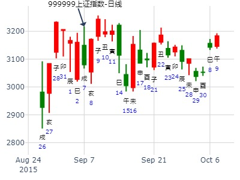
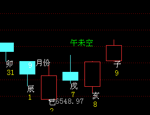
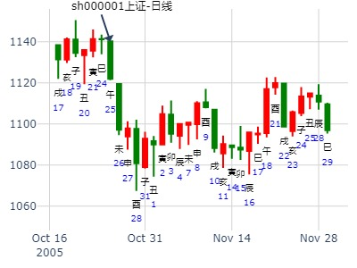
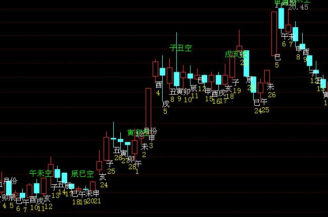
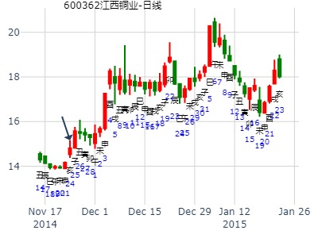

上证指数今天涨跌？--牛教授
时间: 2025-01-08 9时15分
干支: 甲辰年丁丑月丁丑日 (旬空: 申酉 )
风山渐(归魂) 水风井
六神 伏神 本 卦 变 卦
青龙 ▅▅▅▅▅ 官鬼卯木 应Ｏ→ ▅▅ ▅▅ 妻财子水
玄武 妻财子水▅▅▅▅▅ 父母巳火 ▅▅▅▅▅ 兄弟戌土 世
白虎 ▅▅ ▅▅ 兄弟未土 ▅▅ ▅▅ 子孙申金
腾蛇 ▅▅▅▅▅ 子孙申金 世 ▅▅▅▅▅ 子孙酉金
勾陈 ▅▅ ▅▅ 父母午火 Ｘ→ ▅▅▅▅▅ 妻财亥水 应
朱雀 ▅▅ ▅▅ 兄弟辰土 ▅▅ ▅▅ 兄弟丑土
今天大跌。
硬币卦231213-中小板指数下周-风生水起
公历时间：2015年9月5日6时59分?
干 支：乙未年?甲申月?甲申日?丁卯时
旬 空：辰巳???午未???午未???戌亥??
? 艮宫：风山渐（归魂） 震宫：水风井?
六神? 伏 神?【本 卦】 【变 卦】
玄武 ▄▄▄▄▄ 官鬼辛卯木 应○ ▄▄ ▄▄ 妻财戊子水
白虎 妻财丙子水 ▄▄▄▄▄ 父母辛巳火 ▄▄▄▄▄ 兄弟戊戌土 世
螣蛇 ▄▄ ▄▄ 兄弟辛未土 ▄▄ ▄▄ 子孙戊申金
勾陈 ▄▄▄▄▄ 子孙丙申金 世 ▄▄▄▄▄ 子孙辛酉金
朱雀 ▄▄ ▄▄ 父母丙午火 × ▄▄▄▄▄ 妻财辛亥水 应
青龙 ▄▄ ▄▄ 兄弟丙辰土 ▄▄ ▄▄ 兄弟辛丑土

231213 中小板指数下周 风生水起
公历时间：2015年9月5日6时59分
干 支：乙未年 甲申月 甲申日 丁卯时
旬 空：辰巳 午未 午未 戌亥
艮宫：风山渐（归魂） 震宫：水风井
六神 伏 神 【本 卦】 【变 卦】
玄武 ▄▄▄▄▄ 官鬼辛卯木 应○ ▄▄ ▄▄ 妻财戊子水
白虎 妻财丙子水 ▄▄▄▄▄ 父母辛巳火 ▄▄▄▄▄ 兄弟戊戌土 世
螣蛇 ▄▄ ▄▄ 兄弟辛未土 ▄▄ ▄▄ 子孙戊申金
勾陈 ▄▄▄▄▄ 子孙丙申金 世 ▄▄▄▄▄ 子孙辛酉金
朱雀 ▄▄ ▄▄ 父母丙午火 × ▄▄▄▄▄ 妻财辛亥水 应
青龙 ▄▄ ▄▄ 兄弟丙辰土 ▄▄ ▄▄ 兄弟辛丑土

主帖标题: 上证指数的走势！
出生年：年 性别：男 占事：
起卦方式：手工指定 www.iqing.net 线上排盘系统公历
时间：2005年10月25日14时48分 星期二
干支：乙酉年 丙戌月 壬午日 丁未时 (旬空：申酉)
艮宫：风山渐（归魂） 震宫：水风井
六神 伏 神 【本 卦】 【变 卦】
白虎 ▅▅▅▅▅ 官鬼辛卯木 应○→ ▅▅ ▅▅ 妻财戊子水
螣蛇 妻财丙子水 ▅▅▅▅▅ 父母辛巳火 ▅▅▅▅▅ 兄弟戊戌土 世
勾陈 ▅▅ ▅▅ 兄弟辛未土 ▅▅ ▅▅ 子孙戊申金
朱雀 ▅▅▅▅▅ 子孙丙申金 世 ▅▅▅▅▅ 子孙辛酉金
青龙 ▅▅ ▅▅ 父母丙午火 ×→ ▅▅▅▅▅ 妻财辛亥水 应
玄武 ▅▅ ▅▅ 兄弟丙辰土 ▅▅ ▅▅ 兄弟辛丑土
国际财经网温馨提醒您：易学必须走向现代经济才是正确的发展方向！

江西铜业从今天到年底的走势如何 作者：九戒
2014年11月24日21时50分
甲午年 乙亥月 己亥日 乙亥时
旬空：辰巳 申酉 (辰巳) 申酉
风山渐（归魂） 震宫：水风井
勾陈 ▄▄▄▄▄ 官鬼辛卯木 应O-> ▄▄ ▄▄ 妻财戊子水
朱雀 妻财丙子水 ▄▄▄▄▄ 父母辛巳火 ▄▄▄▄▄ 兄弟戊戌土 世
青龙 ▄▄ ▄▄ 兄弟辛未土 ▄▄ ▄▄ 子孙戊申金
玄武 ▄▄▄▄▄ 子孙丙申金 世 ▄▄▄▄▄ 子孙辛酉金
白虎 ▄▄ ▄▄ 父母丙午火 X-> ▄▄▄▄▄ 妻财辛亥水 应
螣蛇 ▄▄ ▄▄ 兄弟丙辰土 ▄▄ ▄▄ 兄弟辛丑土

